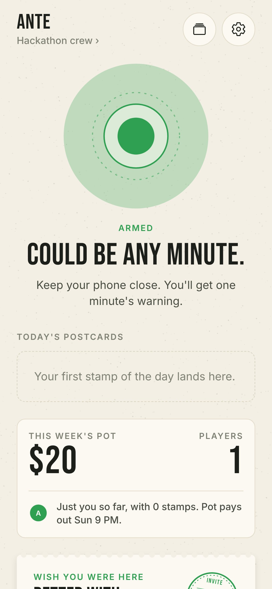
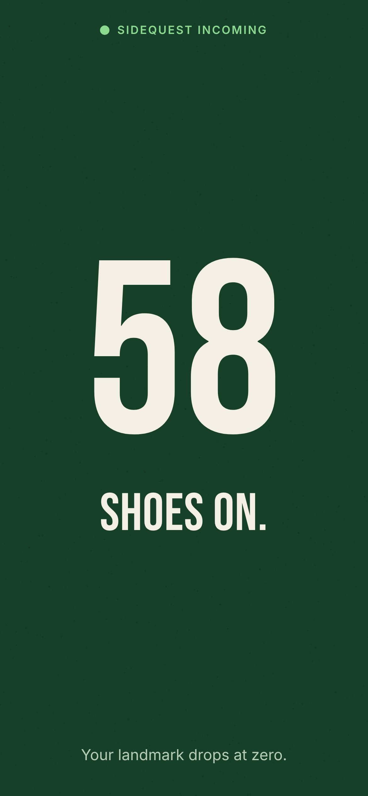
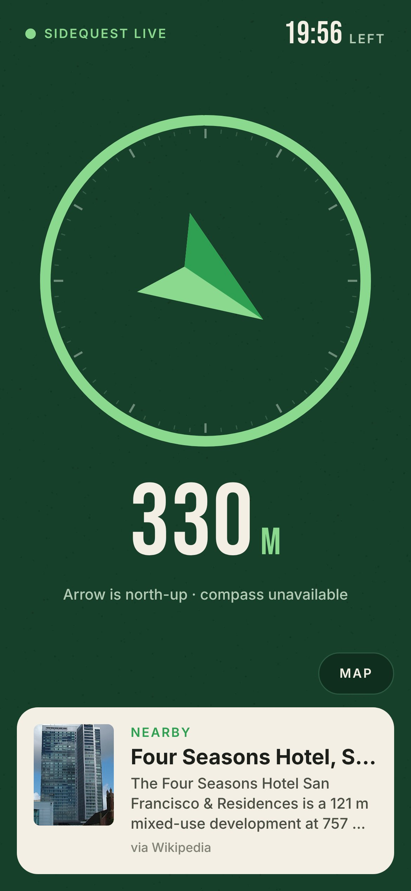
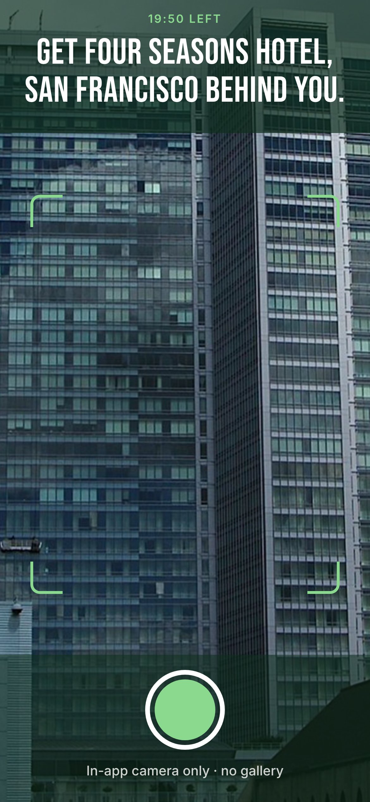
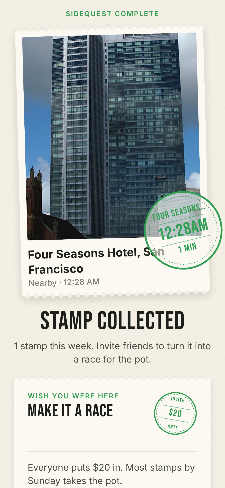
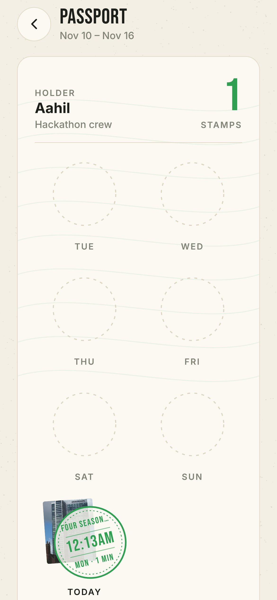

Ante
A weekly prize pool with your friends. One short walk a day to win it.
YC Consumer Mobile Hackathon · November 2026

We see our friends less, and we spend most of the day inside.
150 → 40 min
Time 15–24-year-olds spent with friends in person each day, 2003 vs. 2020
U.S. Surgeon General's Advisory on Social Connection, 2023, p. 13 (from the American Time Use Survey)
87%
Share of the day Americans spend inside buildings, plus another 6% in vehicles
Klepeis et al., National Human Activity Pattern Survey, 2001
Ante
Once a day, at a random minute in a window you picked, Ante gives you a one-minute warning.
Then it shows you a real landmark 10–15 minutes' walk away. Get there before time runs out and take a selfie, and you've collected the day's stamp.


One sidequest
One minute's warning. Sent inside the windows you set during onboarding.
A real place nearby. Found on Wikipedia or OpenStreetMap from where you're standing.

Proof you went. GPS has to put you within 50 m, and the selfie is taken in the app.

A stamp in your passport. Your group sees the postcard.
Prize pool$20Ante
Everyone in the group puts in $20 for the week.
Whoever completes the most sidequests by Sunday takes the prize pool. Ties split it.
Losing money moves people more than earning it.
Share of days people hit a 7,000-step goal
45%when $1.40 was taken away for each miss
35%when $1.40 was paid for each success
30%with no incentive
Patel et al., Annals of Internal Medicine, 2016. Randomized trial, 281 adults, 13 weeks.
Competing with others beats supporting or collaborating with them.
+920
steps a day for the competition group, against a control group
Competition+920
Support+689
Collaboration+637
It was also the only group still ahead after the game ended.
Patel et al., JAMA Internal Medicine, 2019 (STEP UP). Randomized trial, 602 adults, 24 weeks.
How it's built
App
Expo · React Native
- Landmarks from Wikipedia and OpenStreetMap
- GPS geofence check‑in with the in‑app camera
- Maps with react‑native‑maps
real-time
Backend
Convex
- Groups, prize pools and invites
- Stamps and standings, synced live to every phone
webhooks
Payments
Whop
- Prize pool buy-in checkout
- Payouts to the winner
- Webhook‑verified payments
TestingTested with Revyl
BuildingBuilt with Capy
Ante
A weekly prize pool with your friends. One short walk a day to win it.
Want a sidequest? We'll send one to your phone.
